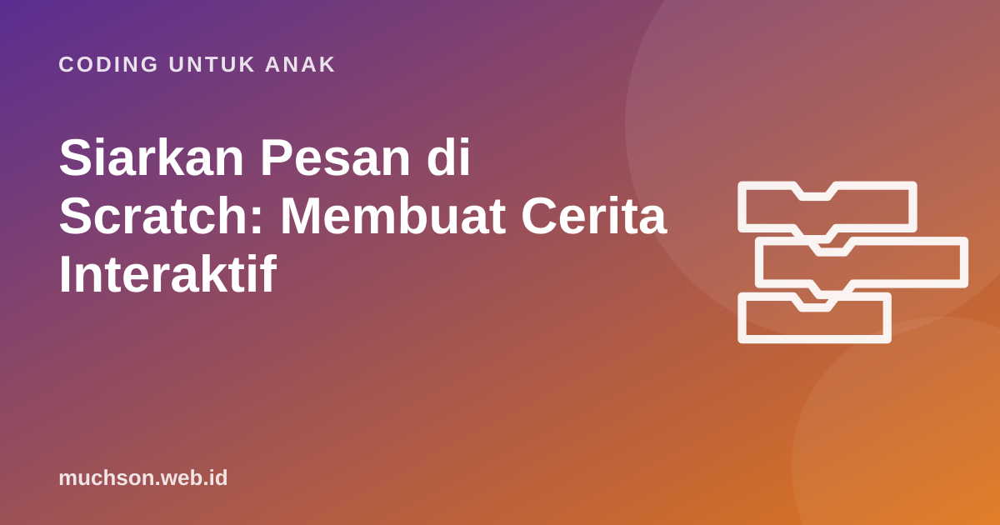

Beranda › Artikel › Coding untuk Anak
Coding untuk AnakSiarkan Pesan di Scratch: Membuat Cerita Interaktif
Ketika proyek Scratch punya lebih dari satu tokoh, muncul masalah: bagaimana tokoh B tahu kapan tokoh A selesai bicara? Menebak dengan blok "tunggu" mudah meleset. Jawabannya adalah siarkan pesan, cara sprite saling mengirim sinyal. Konsep ini juga memperkenalkan ide penting dalam pemrograman modern: program yang dijalankan oleh kejadian.

Analogi bel sekolah
Saat bel istirahat berbunyi, semua kelas di sekolah keluar bersamaan. Bel tidak memanggil kelas satu per satu; ia hanya memberi sinyal, dan setiap kelas yang "mendengar" tahu harus melakukan apa. Begitulah siarkan pesan (broadcast) bekerja. Satu sprite menyiarkan pesan bernama, misalnya "giliranBudi", dan setiap sprite yang punya blok ketika aku menerima giliranBudi langsung bertindak.
Tiga blok pesan
| Blok | Kategori | Fungsi |
|---|---|---|
| siarkan [pesan] | Kejadian | Mengirim sinyal ke semua sprite dan panggung, lalu langsung lanjut |
| siarkan [pesan] dan tunggu | Kejadian | Mengirim sinyal, lalu menunggu sampai semua penerima selesai |
| ketika aku menerima [pesan] | Kejadian | Memulai skrip saat pesan diterima |
Contoh: dialog dua tokoh
Coba ubah kalimat Oyen menjadi sangat panjang dengan durasi 5 detik. Dina tetap menunggu dengan sabar. Kalau memakai blok "tunggu 2 detik", Dina akan memotong pembicaraan. Inilah keunggulan pesan: waktu diatur oleh kejadian, bukan oleh tebakan.
Contoh: pindah adegan
Pesan juga cocok untuk mengatur adegan. Panggung menyiarkan "adegan2", lalu setiap sprite memutuskan sendiri: muncul, bersembunyi, atau pindah tempat.
Cerita bercabang: pembaca memilih
Cerita interaktif menjadi seru bila pembaca bisa memilih. Gabungkan blok tanya, jika maka, dan pesan:
Tips memberi nama pesan
- Nama yang menjelaskan. "giliranDina" lebih jelas daripada "message1".
- Satu pesan, satu tujuan. Jangan memakai pesan yang sama untuk dua kejadian berbeda.
- Buat daftar. Untuk proyek besar, tulis daftar pesan dan siapa penerimanya di kertas.
Konsep ini dalam dunia pemrograman profesional disebut event-driven programming. Tombol di aplikasi ponsel, notifikasi, sampai sistem pembayaran daring bekerja dengan pola yang mirip: ada yang mengirim kejadian, ada yang mendengarkan.
Bug yang sering muncul
Cerita interaktif menggabungkan kemampuan menulis, logika, dan coding. Bagi anak yang suka mengarang, ini sering menjadi proyek favorit. Ajak ia memamerkan ceritanya ke keluarga, atau gunakan jalur belajar yang terstruktur seperti PixelKode untuk melanjutkan ke konsep berikutnya.
Tanya jawab
Apa fungsi blok siarkan di Scratch?
Apa beda "siarkan" dan "siarkan dan tunggu"?
Apakah pesan bisa membawa data seperti angka?
Berapa pesan yang boleh dibuat?
Sumber dan bacaan lanjut
- Scratch untuk pendidik
- Brennan & Resnick (2012). Konsep kejadian dan paralelisme
- Scratch: buat proyek baru